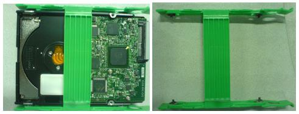

Operating Documentation
Direction 5196839-800, Rev# 6
RT16 and Xtra Service Info Adv
Operating Documentation |
| Required Persons | Preliminary Reqs | Procedure | Finalization |
|---|---|---|---|
| 1 | Timing Not Applicable |
This procedure is used when repalcing the hard drives in a HP Host Computer xw8400. The Hard Disk Drive in xw8400 is set as FRU, can be ordered separately.
| Last Revised: | 19 May 2008 |
To prevent damage to components within the HP xw8x00 chassis,
observe the following ESD precautions:
| |
With ALL cables removed from the old and new Host Computers, perform the following steps:
Unlock the cover on the side of the old Host Computer.
The cover keys are attached to the back panel of the system.
Pull out on the side cover latch to release the side cover.
Tilt the cover open, then lift it off. Refer to Illustration 1.
Illustration 1: Opening the Side Cover

Repeat the above procedure, to open the new Host Computer.
Place the Host Computer on its side with the system board facing up.
The Hard disk Drives are defined as below. Identify the Hard Disk Drive which you want to replace:
OS drive resides in slot 1 (bottom) – Connected to SAS0 on mother board
Image disk resides in slot 2 -- Connected to SAS1 on mother board
Scan data disk 1 resides in slot 3 -- Connected to SAS2 on mother board
Scan data disk 2 resides in slot 4 -- Connected to SAS3 on mother board
Remove the power and SAS data cable from the hard disk drive which will be replaced.
Place your fingers on the colored release clips on the sides of the drive, and squeeze inward. Pull gently just enough to release the drive rail latches. Refer to Illustration 2.
Illustration 2: Hard Drive Rails

| The drive rails are not screwed on to the drive. Do not hold the drive by the rails when it is not installed in a drive bay, because you could drop and damage the drive. | |
Grasp the hard drive with your hand and pull out.
Place the hard drive (with rails attached) on a static mat.
Remove the rail from the hard disk drive, and put it aside. Refer to Illustration 3
Illustration 3: Hard Drive Removal

| Hold onto the hard drive - NOT the rails - when handling the drive. | |
Install the rail to new hard disk drive.
Insert the new hard disk drive in the same slot of Host Computer.
Connect the SAS cable and power cable to hard disk drive.
Connect the power cable to hard disk drive.
Connect the proper SAS Data cable to hard disk drive. Refer to below description of SAS cable:
OS drive resides in slot 1 (bottom) – Connected to SAS0 on mother board
Image disk resides in slot 2 -- Connected to SAS1 on mother board
Scan data disk 1 resides in slot 3 -- Connected to SAS2 on mother board
Scan data disk 2 resides in slot 4 -- Connected to SAS3 on mother board
Repeat the above procedures to install all hard drives in case multiple hard disk drives are replaced.
Ensure that all internal cables are properly connected and safely routed in the new Host Computer.
Place the side cover onto the Host Computer chassis (aligning the guide rail on the bottom inside edge of the cover with the bottom edge of the Host Computer chassis). Refer to Illustration 4.
Illustration 4: Aligning and Closing the Cover

Verify no cables are pinched, and gently close the cover.
Lock the cover using the key provided.
Repeat the above procedure, to close and lock the original Host Computer, with the new drives installed.
Please refer to LFC procedure of 08BW20.X or later to do LFC procedures to load all the software and options.
The Reconstruction (not Scan) portion of the system can be tested at this point.
Click on the <RETRO RECON>selection on the left Monitor.
Click the <RAT GOLD> series.
Click <SELECT SERIES>.
Click on <CONFIRM>.
Verify the image(s) reconstruct and are displayed.
Click on <QUIT>.
Take some scans, verify the image(s) reconstruct and are displayed.
Check that all customer functions are operational. (Auto voice, filming, network, archive.)
Install the front and rear Operator Console covers.